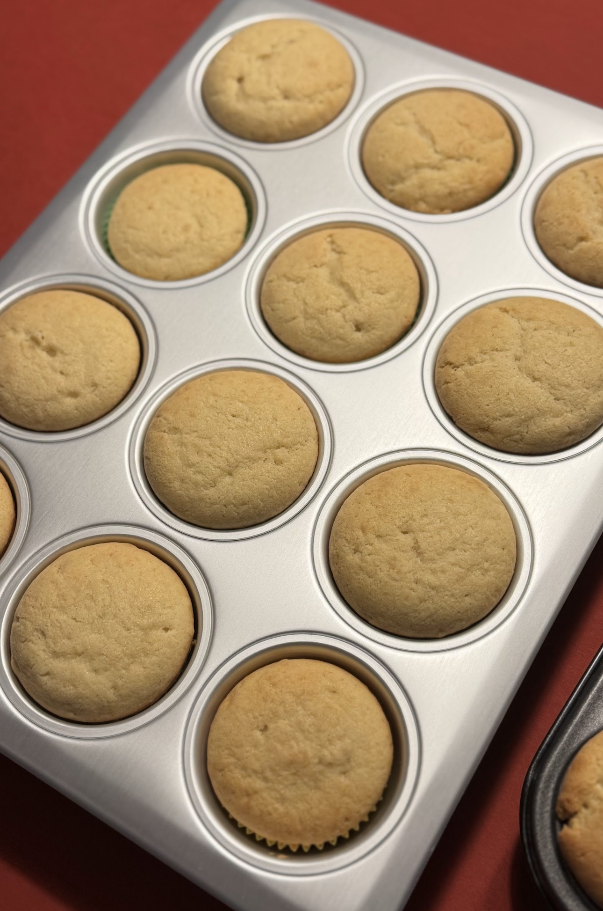
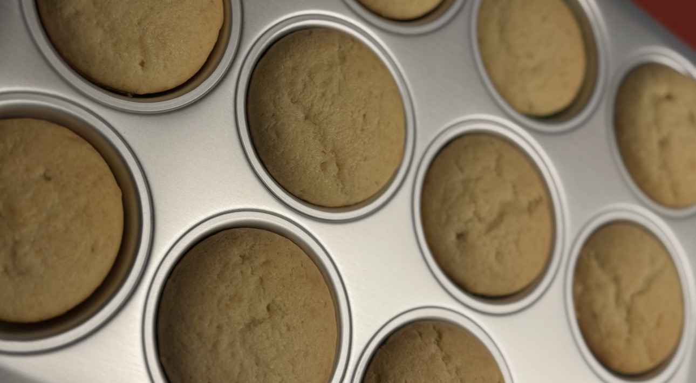

miniedles
♥
♥
♥
♥
♥
♥


Ingredients:
- 225g soft butter
- 200g sugar
- 2 eggs
- 1tsp vanilla extract
- 375g white flour
- 3tsp baking powder
- 240ml milk
Steps:
- Preheat oven to 170°C
- Add the soft butter, white & brown sugar into a bowl and mix until creamy.
- Add the eggs one by one and the vanilla extract to the mixture.
- After mixing, add the flour and the baking powder and fold it in.
- Mix in the milk.
- Fill the batter into muffin tins.
- Bake for 40minutes.
- After baking let them fully cool.